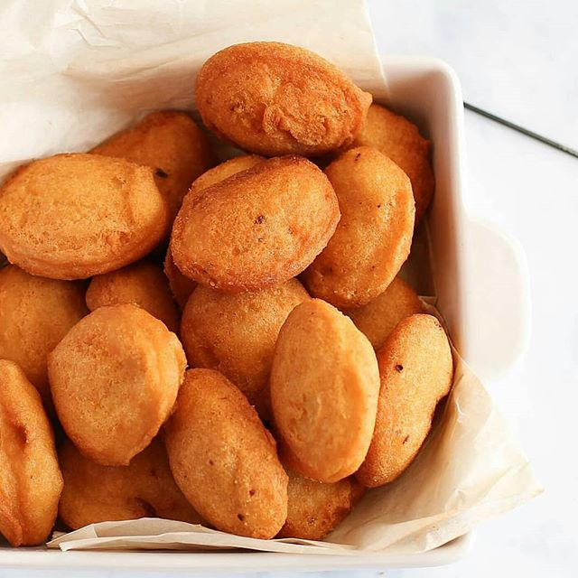

WELCOME HOME!Akara, also known as Bean Cakes, Bean Balls, Bean Fritas or Acarajé in Portuguese is a Nigerian breakfast recipe made with beans. How to Make Akara [Video] To make Akara, you need to first of all remove the beans coat. You should remove the coat from the beans just before you make the Akara. This means that you can't use coatless beans that has been stored in the fridge or freezer to make Akara. I tried that and the Akara did not turn out well like the ones made with freshly peeled beans.  |
|
| © Copyright 2020 by karosaxy |